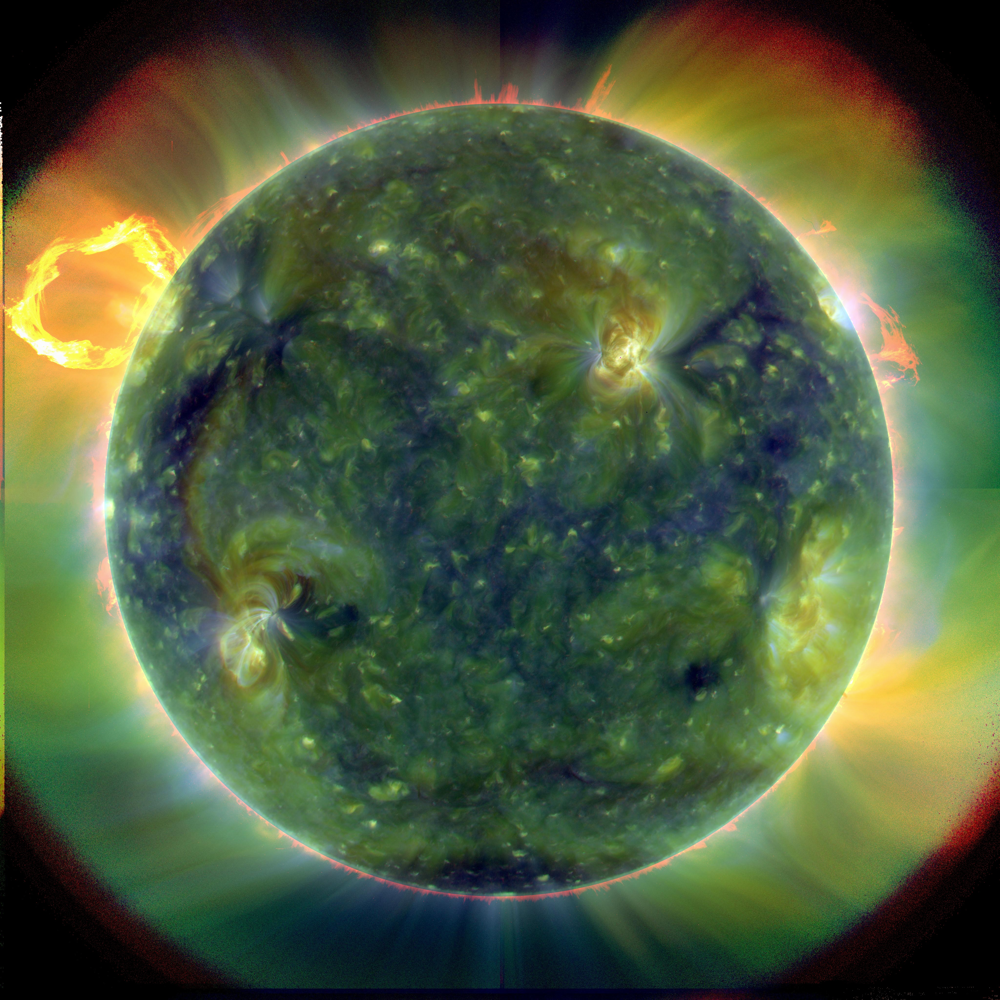

Keep the frame, or follow the image.
Two working treatments of the same crop. Switch ratios and notice how far the controls travel. This is an authored design hypothesis; neither direction is a universal answer.
Solar layers
800 × 800
Drag the image to find your frame.
Image: NASA / Solar Dynamics Observatory, 30 March 2010. Instrument-band color, not ordinary visible-light photography. Original Astra-authored study; not a Luna or Flash result. Design hypothesis and countercase.